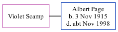

Violet Scamp, the wife of Albert Edward Jellico Page (the fourth cousin on the father's side of Nigel Horne), and married Albert (a truck driver) in Elham, Kent, England around Nov 19391.
Citations
England & Wales Marriages 1837-2005 - Findmypast
Family Tree

Generated by ged2site. Last updated on Nov 13, 2024